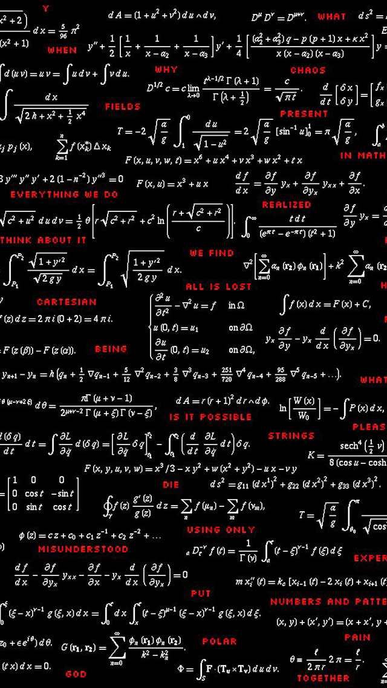

Математический институт Клэя
Математический институт Клэя — частная некоммерческая организация, расположенная в Кембридже, штат Массачусетс (США). Был основан в 1998 году бизнесменом Лэндоном Клэйем и математиком из Гарварда Артуром Джеффи. Цель института — увеличение и распространение математических знаний. С этой целью институт выдаёт различные награды и спонсирует многообещающих математиков.Структура института вполне обычна — совет директоров, который принимает решения о награждениях и выделении грантов и научный комитет, который должен одобрить решение совета директоров. На 2006 год совет директоров состоит из членов семьи Клэев (включая самого Лэндона Клэя), а в научный комитет входят ведущие математики страны — сэр Эндрю Уайлс, Юм-Тон Сиу, Ричард Мелроуз, Григорий Маргулис, Саймон Дональдсон и Джеймс Карлсон.
Институт наиболее известен после объявления 24 мая 2000 года списка Проблем тысячелетия (Millennium Prize Problems). Эти семь проблем определены как «важные классические задачи, решение которых не найдено вот уже в течение многих лет». За решение каждой из задач предложен приз в 1 000 000 долларов США. Анонсируя приз, институт Клэя провёл параллель со списком проблем Гильберта, представленным в 1900 году и оказавшим существенное влияние на математиков XX века. Из 23 проблем в списке большинство уже решены и только одна — гипотеза Римана, вошла в список института Клэя.
Другая деятельность
Кроме того, институт Клэя выплачивает стипендии (сроком от 2 до 5 лет) молодым математикам, а также краткосрочные гранты для исследований и написания книг. За самый значительный прорыв в области математических исследований присуждается ежегодная премия. Также институт Клэя в большом количестве организует курсы, конференции, семинары и публичные лекции.
Изображение Математического института Клэя